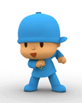

GRACIAS POR VISITARME:
te damos una cordial bienvenida a la segunda unidad de Biologia: PROCESO Att: 4 alumnos del 4° A
Respiración
Respiración Pulmonar
Los pulmones humanos son estructuras pertenecientes al sistema respiratorio, se ubican en la caja torácica, delimitando a ambos lados el mediastino, sus dimensiones varían, el pulmón derecho es algo más grande que el izquierdo, debido al espacio ocupado por el corazón. Los pulmones son los órganos en los cuales la sangre recibe oxígeno desde el aire y a su vez la sangre se desprende de dióxido de carbono el cual pasa al aire. Este intercambio, se produce mediante la difusión del oxígeno y el dióxido de carbono entre la sangre y los alvéolos que forman los pulmones.
Respiración por Branquias
Las branquias son los órganos respiratorios de los animales acuáticos, mediante los que se realiza el intercambio de gases, oxígeno y dióxido de carbono, entre el medio interno y el ambiente. Los animales acuáticos captan O2 que se encuentra disuelto en el agua, el cual pasa a los fluidos internos y es transportado a los tejidos, donde las células lo requieren para la respiración celular, proceso que se realiza en orgánulos celulares llamados mitocondrias. Los animales más pequeños y de menor tasa metabólica realizan el intercambio de gases por su superficie corporal. Los más grandes o activos necesitan una superficie de intercambio más extensa, para lo que han adquirido en el curso de la evolución estructuras especializadas a las que se llama branquias.
Respiración Cutánea
La respiración cutánea es propia de los anélidos, de algunos moluscos y de los anfibios e incluso de ciertos equinodermos. En este tipo de respiración hay que distinguir el tegumento corporal, que configura la estructura respiratoria, y la piel, a través de la cual se realiza el intercambio gaseoso, El intercambio gaseoso se realiza a través de la epidermis, siempre y cuando la cutícula externa esté húmeda, algo que se consigue porque, intercaladas entre las células cúbicas del epitelio, hay células glandulares. Los anfibios, como por ejemplo las ranas y sapos, respiran en el interior del agua a través de branquias; cuando sufren su metamorfosis para entrar en la edad adulta, pierden esas branquias y desarrollan unos pulmones para poder respirar en tierra.
Respiración Traqueal
Es el tipo de respiración que presentan los insectos. Las tráqueas son unos tubos que se abren al exterior por unos orificios denominados estigmas. Desde ellos penetran hacia el interior y disminuyen de diámetro, al tiempo que sus paredes se hacen más delgadas. Así, el oxígeno las atraviesa y llega a las células, al tiempo que el dióxido de carbono escapa de ellas. El conjunto de tráqueas forma el sistema traqueal que es una red de tubos vacíos, progresivamente de menor diámetro, que penetra en los tejidos y aporta oxígeno directamente a las células, sin necesidad de la intervención del aparato circulatorio.
Respiración de las Plantas
La Respiración de las Plantas. En las plantas, el intercambio gaseoso se realiza principalmente a través de estomas y-o lenticelas. ¿Qué es un estoma?…Formados por un par de células epidérmicas modificadas de forma arriñonada. Las estomas suelen localizarse en la parte inferior de la hoja, en la que no reciben la luz solar directa, también se encuentran en tallos herbáceos. ¿Qué es una Lenticela?…Se encuentran diseminadas en la corteza muerta de tallos y raíces. De modo típico, las lenticelas son de forma lenticular en su contorno externo, de donde se les viene el nombre. De ordinario están orientadas vertical u horizontalmente sobre el tallo, según la especie y varían en tamaño, desde apenas visible a tan grande como de 1 cm o aún de 2,5 de largo. En árboles con corteza muy fisurada, las lenticelas se encuentran en el fondo de las fisuras. La función de las lenticelas es permitir un intercambio neto de gases entre los tejidos parenquimáticos internos y la atmósfera.
Respiración Aeróbica
La respiración aeróbica es un tipo de metabolismo energético en el que los seres vivos extraen energía de moléculas orgánicas, como la glucosa, por un proceso complejo en el que el carbono desoxidado y en el que el oxígeno procedente del aire es el oxidante empleado. La respiración aeróbica es el proceso responsable de que la mayoría de los seres vivos, los llamados por ello aerobios, requieran oxígeno. La respiración aeróbica es propia de los organismos eucariontes en general y de algunos tipos de bacterias. El oxígeno que, como cualquier gas, atraviesa sin obstáculos las membranas biológicas, atraviesa primero la membrana plasmática y luego las membranas mitocondriales, siendo en la matriz de la mitocondria donde se une a electrones y protones formando agua. En esa oxidación final, que es compleja, y en procesos anteriores se obtiene la energía necesaria para la fosforilación del ATP.
Respiración Anaeróbica
La respiración anaeróbica es un proceso biológico de óxido de monosacáridos y otros compuestos en el que el aceptor terminal de electrones es una molécula inorgánica distinta del oxígeno, y más raramente una molécula orgánica. La realizan exclusivamente algunos grupos de bacterias, transportadora de electrones análoga a la de las mitocondria en la respiración aeróbica. No debe confundirse con la fermentación, que es un proceso también anaeróbico, pero en el que no participa nada parecido a una cadena transportadora de electrones y el aceptor final de electrones es siempre una molécula orgánica. En la respiración anaeróbica no se usa oxígeno, sino que para la misma función se emplea otra sustancia oxidante distinta, como el sulfato o el nitrato.
¿CUAL ES TU NOMBRE?
¿QUE TAL TE PARECE ESTA PAGINA?:
BUENA
MUY BUENA
EXELENTE
ENVIANOS TU COMENTARIO
Busca mas infotmacion en:
La guia
OBTEN MAS INFORMACION
LIBROS
Biología marina
Biología molecular
Botánica
Ecología
Ecologismo y lifestyle
Estudios y ensayos
Microbiología
Guías de especies

Solo se feliz
¿Tienes duda en tus claces de programacion?
Nose mucho pero te puedo ayudar
Andy Martinez
Agradecemos a:
ESTUDIATECA
por la informacion
Si te gusto la pagina, contactanos
Cesar Gonzalez
Andy Martinez
Nenita Gomez
Isidro Molina
 Busca mas infotmacion en: La guia
Busca mas infotmacion en: La guia
 Andy Martinez
Andy Martinez


.jpg)